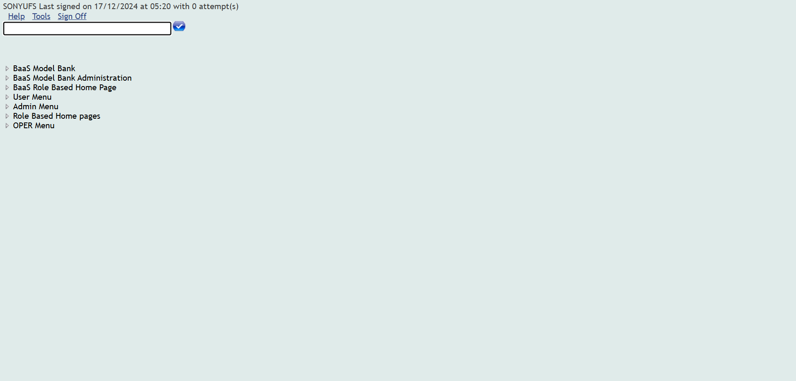
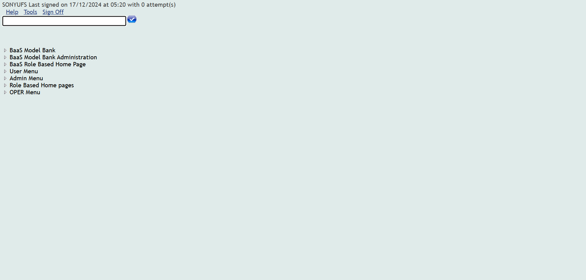
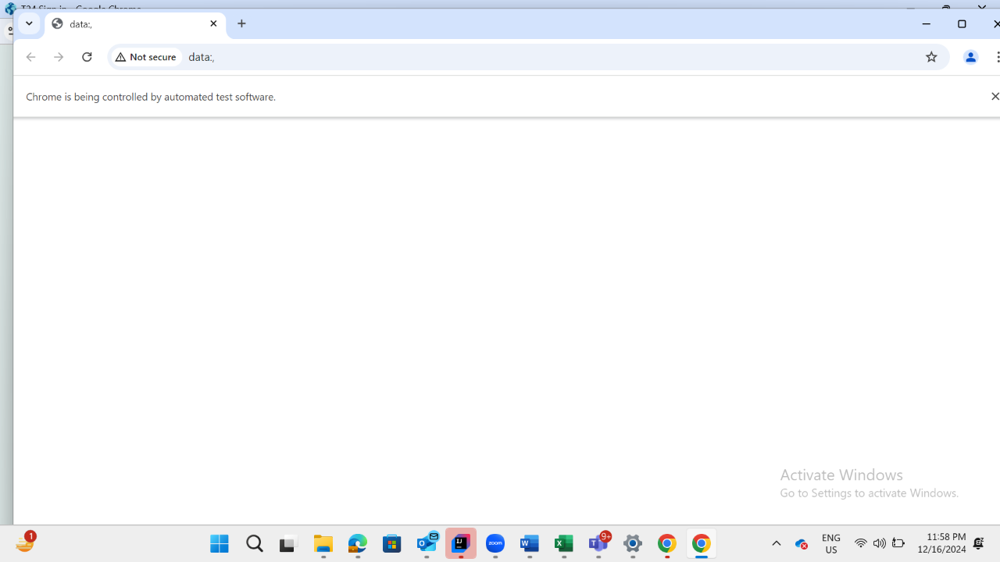
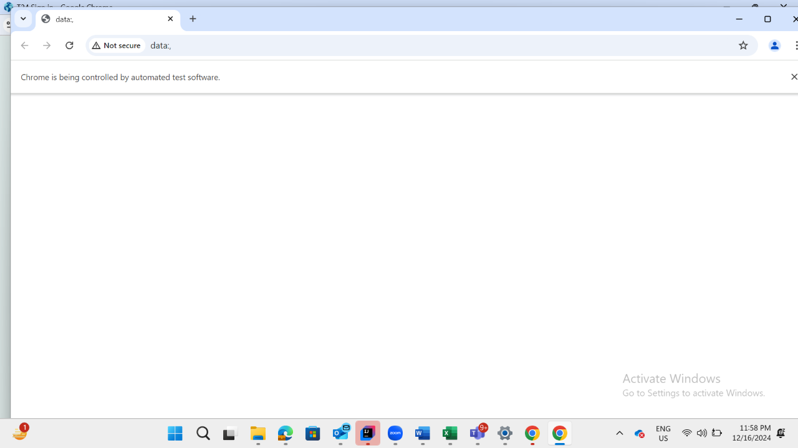

-
Environmental
23:57:22 PM / 34:49:581 Fail
Environmental
12.16.2024 23:57:22 12.17.2024 03:02:12 34:49:581 · #test-id=2FailT24 health checkup UATWhen close all the other opened windowsWhen User opens the UAT T24 UrlThen User should be able to login to T24 Then The user should be able to fill the commandline for Checking Dates
Then The user should be able to fill the commandline for Checking Dates Then check whether the date is in Synccom.frameium.stepdef.Hooks.afterEveryStep(io.cucumber.java.Scenario)
Then check whether the date is in Synccom.frameium.stepdef.Hooks.afterEveryStep(io.cucumber.java.Scenario) Then switch back to main windowStep skippedFailT24 health checkup SITWhen close all the other opened windowsWhen User opens the SIT T24 UrlThen User should be able to login to SIT T24Then The user should be able to fill the commandline for checking Datescom.frameium.stepdef.Hooks.afterEveryStep(io.cucumber.java.Scenario)
Then switch back to main windowStep skippedFailT24 health checkup SITWhen close all the other opened windowsWhen User opens the SIT T24 UrlThen User should be able to login to SIT T24Then The user should be able to fill the commandline for checking Datescom.frameium.stepdef.Hooks.afterEveryStep(io.cucumber.java.Scenario) Then check whether the date is in SyncStep skippedThen switch back to main windowStep skippedFailIBM health checkup UAT User opens the UAT IBM URLWhen close all the other opened windowsWhen Login to UAT IBMcom.frameium.stepdef.Ufs.IBPayments.afterStep(io.cucumber.java.Scenario)com.frameium.stepdef.Hooks.afterEveryStep(io.cucumber.java.Scenario)Then click on register clientStep skippedThen retrieve the client numberStep skippedThen Check the client maintenance UATStep skippedFailIBM health checkup SITWhen close all the other opened windowscom.frameium.stepdef.Ufs.IBPayments.afterStep(io.cucumber.java.Scenario)com.frameium.stepdef.Hooks.afterEveryStep(io.cucumber.java.Scenario)When User opens the SIT IBM URLStep skippedWhen Login to SIT IBMThen click on register clientStep skippedThen retrieve the client numberrStep skippedThen Check the client maintenance SITStep skippedFailIB Health checkup UATFailIB Health checkup UATWhen close all the other opened windowscom.frameium.stepdef.Ufs.IBPayments.afterStep(io.cucumber.java.Scenario)com.frameium.stepdef.Hooks.afterEveryStep(io.cucumber.java.Scenario)When User opens the UAT IB URLStep skippedWhen I login with username"285419"and password"Temenos@123"of UAT IBStep skippedAnd click on Go to AccountsStep skippedThen verify whether the IB details are displayedStep skippedThen logout from IbStep skippedFailIB Health checkup SITFailIB Health checkup SITWhen close all the other opened windowscom.frameium.stepdef.Ufs.IBPayments.afterStep(io.cucumber.java.Scenario)com.frameium.stepdef.Hooks.afterEveryStep(io.cucumber.java.Scenario)When User opens the SIT IB URLStep skippedWhen I login with username"285419"and password"Temenos@123"of SIT IBStep skippedThen verify whether the IB details are displayedStep skippedThen logout from IbStep skipped
Then check whether the date is in SyncStep skippedThen switch back to main windowStep skippedFailIBM health checkup UAT User opens the UAT IBM URLWhen close all the other opened windowsWhen Login to UAT IBMcom.frameium.stepdef.Ufs.IBPayments.afterStep(io.cucumber.java.Scenario)com.frameium.stepdef.Hooks.afterEveryStep(io.cucumber.java.Scenario)Then click on register clientStep skippedThen retrieve the client numberStep skippedThen Check the client maintenance UATStep skippedFailIBM health checkup SITWhen close all the other opened windowscom.frameium.stepdef.Ufs.IBPayments.afterStep(io.cucumber.java.Scenario)com.frameium.stepdef.Hooks.afterEveryStep(io.cucumber.java.Scenario)When User opens the SIT IBM URLStep skippedWhen Login to SIT IBMThen click on register clientStep skippedThen retrieve the client numberrStep skippedThen Check the client maintenance SITStep skippedFailIB Health checkup UATFailIB Health checkup UATWhen close all the other opened windowscom.frameium.stepdef.Ufs.IBPayments.afterStep(io.cucumber.java.Scenario)com.frameium.stepdef.Hooks.afterEveryStep(io.cucumber.java.Scenario)When User opens the UAT IB URLStep skippedWhen I login with username"285419"and password"Temenos@123"of UAT IBStep skippedAnd click on Go to AccountsStep skippedThen verify whether the IB details are displayedStep skippedThen logout from IbStep skippedFailIB Health checkup SITFailIB Health checkup SITWhen close all the other opened windowscom.frameium.stepdef.Ufs.IBPayments.afterStep(io.cucumber.java.Scenario)com.frameium.stepdef.Hooks.afterEveryStep(io.cucumber.java.Scenario)When User opens the SIT IB URLStep skippedWhen I login with username"285419"and password"Temenos@123"of SIT IBStep skippedThen verify whether the IB details are displayedStep skippedThen logout from IbStep skipped
-
org.openqa.selenium.WebDriverException
1 tests
org.openqa.selenium.WebDriverException
1 failedStatus Timestamp TestName Fail 00:00:24 AM When Login to UAT IBM Environmental.IBM health checkup UAT User opens the UAT IBM URL.When Login to UAT IBMFail 00:01:23 AM com.frameium.stepdef.Ufs.IBPayments.afterStep(io.cucumber.java.Scenario) Environmental.IBM health checkup UAT User opens the UAT IBM URL.com.frameium.stepdef.Ufs.IBPayments.afterStep(io.cucumber.java.Scenario)Fail 00:01:23 AM com.frameium.stepdef.Hooks.afterEveryStep(io.cucumber.java.Scenario) Environmental.IBM health checkup UAT User opens the UAT IBM URL.com.frameium.stepdef.Hooks.afterEveryStep(io.cucumber.java.Scenario)Fail 03:01:50 AM When close all the other opened windows Environmental.IBM health checkup SIT.When close all the other opened windowsFail 03:01:53 AM com.frameium.stepdef.Ufs.IBPayments.afterStep(io.cucumber.java.Scenario) Environmental.IBM health checkup SIT.com.frameium.stepdef.Ufs.IBPayments.afterStep(io.cucumber.java.Scenario)Fail 03:01:54 AM com.frameium.stepdef.Hooks.afterEveryStep(io.cucumber.java.Scenario) Environmental.IBM health checkup SIT.com.frameium.stepdef.Hooks.afterEveryStep(io.cucumber.java.Scenario)Fail 03:02:06 AM When close all the other opened windows Environmental.IB Health checkup UAT.When close all the other opened windowsFail 03:02:07 AM com.frameium.stepdef.Ufs.IBPayments.afterStep(io.cucumber.java.Scenario) Environmental.IB Health checkup UAT.com.frameium.stepdef.Ufs.IBPayments.afterStep(io.cucumber.java.Scenario)Fail 03:02:07 AM com.frameium.stepdef.Hooks.afterEveryStep(io.cucumber.java.Scenario) Environmental.IB Health checkup UAT.com.frameium.stepdef.Hooks.afterEveryStep(io.cucumber.java.Scenario)Fail 03:02:09 AM When close all the other opened windows Environmental.IB Health checkup SIT.When close all the other opened windowsFail 03:02:11 AM com.frameium.stepdef.Ufs.IBPayments.afterStep(io.cucumber.java.Scenario) Environmental.IB Health checkup SIT.com.frameium.stepdef.Ufs.IBPayments.afterStep(io.cucumber.java.Scenario)Fail 03:02:12 AM com.frameium.stepdef.Hooks.afterEveryStep(io.cucumber.java.Scenario) Environmental.IB Health checkup SIT.com.frameium.stepdef.Hooks.afterEveryStep(io.cucumber.java.Scenario) -
java.lang.AssertionError
1 tests
java.lang.AssertionError
1 failedStatus Timestamp TestName Fail 23:58:00 PM Then check whether the date is in Sync Environmental.T24 health checkup UAT.Then check whether the date is in Sync -
java.lang.RuntimeException
1 tests
java.lang.RuntimeException
1 failedStatus Timestamp TestName Fail 23:58:20 PM Then The user should be able to fill the commandline for checking Dates Environmental.T24 health checkup SIT.Then The user should be able to fill the commandline for checking Dates
-
@environmentalcheckup
8 tests
@environmentalcheckup
8 failedStatus Timestamp TestName Fail 23:57:22 PM T24 health checkup UAT Environmental.T24 health checkup UATFail 23:58:08 PM T24 health checkup SIT Environmental.T24 health checkup SITFail 00:00:23 AM IBM health checkup UAT User opens the UAT IBM URL Environmental.IBM health checkup UAT User opens the UAT IBM URLFail 03:01:41 AM IBM health checkup SIT Environmental.IBM health checkup SITFail 03:02:03 AM IB Health checkup UAT Environmental.IB Health checkup UATFail 03:02:03 AM IB Health checkup UAT Environmental.IB Health checkup UATFail 03:02:09 AM IB Health checkup SIT Environmental.IB Health checkup SITFail 03:02:09 AM IB Health checkup SIT Environmental.IB Health checkup SIT
Started
Dec 16, 2024 11:57:16 PM
Ended
Dec 17, 2024 03:02:16 AM
Features Passed
0
Features Failed
1
Features
Scenarios
Steps
Timeline
Tags
| Name | Passed | Failed | Skipped | Others | Passed % |
|---|---|---|---|---|---|
| @environmentalcheckup | 0 | 8 | 0 | 0 | 0% |